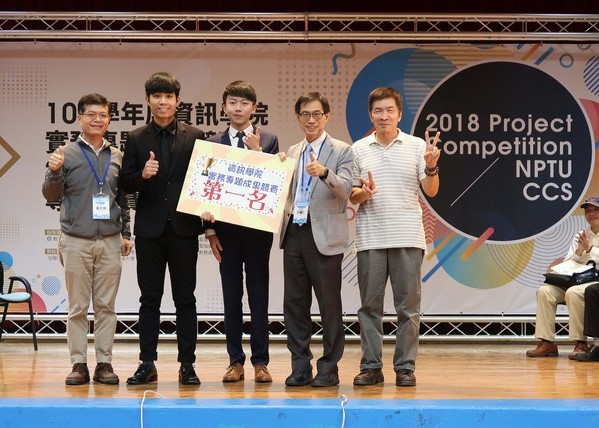

Coding / Design
在高中時期，就讀室內設計系的我，因緣際會在升大學時選擇了資訊管理學系。讓我能運用現有的「資訊技能」加上「設計經驗」做出更高品質的網頁設計。
在高中時期，就讀室內設計系的我，因緣際會在升大學時選擇了資訊管理學系。讓我能運用現有的「資訊技能」加上「設計經驗」做出更高品質的網頁設計。
軍事常備訓練 。
五育獎 - 美育獎 、 大學四年級 - 書卷獎
協助企業開發網站，從中學習 Wordpress 相關網站操作包含購物車系統、 plug-in 等應用，也學習SEO觀念、行銷基本概念。並實際用程式碼為既有網頁 增添RWD、使用Wordpress 開發網站。兼有成功上線 。
我與組員設計出一款具多功能、實用性的求援 APP，因應當代頻傳的社會事件 與人口失蹤事件等等，其中使用者介面與使用者經驗設計的部分由我全權處理， 透過Adobe 旗下的 Xd、Ps、Ai 進行APP的版排、Logo、按鈕設計、圖片編修 ，其它則與組員一同完成，最後榮獲資訊學院第一名的殊榮 。
在不套用現成網站模板情況下，自己運用自學的 CSS 與 JavaScript 架設好前端 介面、微動畫，後端部分則和組員利用 ASP.NET 與 SQL Sever 一同完成，最 後獲得全系成績最高分的殊榮 。
大學期間，參與了資訊學院的「院徽 LOGO 設計」，榮幸的獲得第二名的殊榮 。
因緣際會選擇了資訊相關科系就讀 。
高職就讀設計相關科系，常有校內、外設計比賽經驗，並且有得獎經驗 。